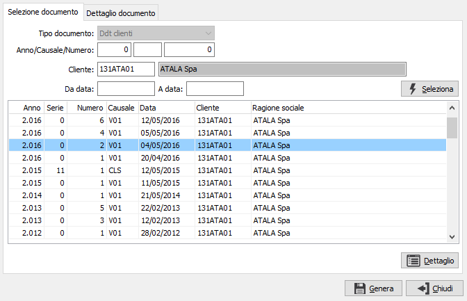
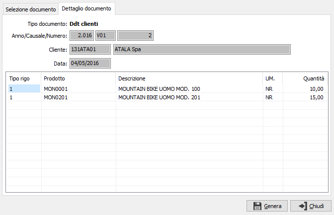

Generazione da ddt/fatture
Il packing list può essere generato da un singolo Ddt oppure da una singola fattura. Utilizzando gli appositi pulsanti, posti nella sezione Dati generali si accede alla seguente finestra:

In questa finestra, che è uguale sia per i Ddt che per le fatture (cambia solo il tipo documento in base al pulsante premuto), è possibile specificare diversi criteri di selezione, tra cui l'anno, la causale, il numero, il cliente, è possibile utilizzare documenti anche di clienti diversi dall'intestatario del packing list, e l'eventuale periodo di analisi; è comunque necessario premere il pulsante Seleziona che visualizzerà nella griglia sottostante l'elenco dei documenti coerenti con i parametri di selezione richiesti. Premendo il pulsante Dettaglio vengono visualizzate le righe del documento selezionato.

La pressione sul pulsante Genera, sulla prima o sulla seconda sezione della finestra, determina l'inserimento dei dati relativi al documento selezionato nel packing list; la generazione del dettaglio colli per ogni rigo riportato viene effettuata in base al campo 'Numero pezzi' presente sull'anagrafica del prodotto; se questo valore non è disponibile viene generato un solo collo per ogni prodotto inserito. Se il packing list viene generato non sarà possibile accedere nuovamente a questa finestra se non cancellando tutte le righe inserite nel packing stesso.
Il pulsante Chiudi consente di tornare al packing senza effettuare nessuna operazione.